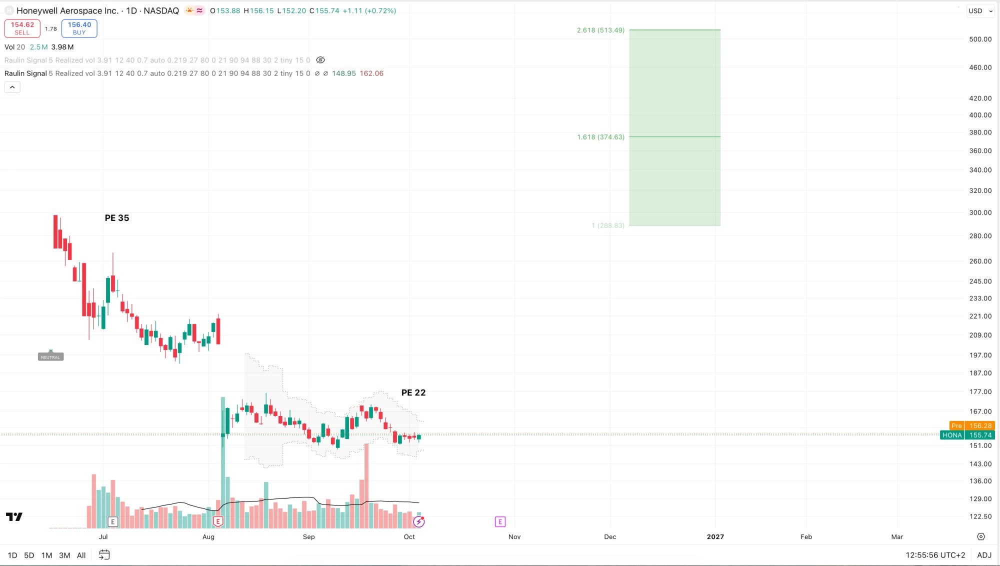
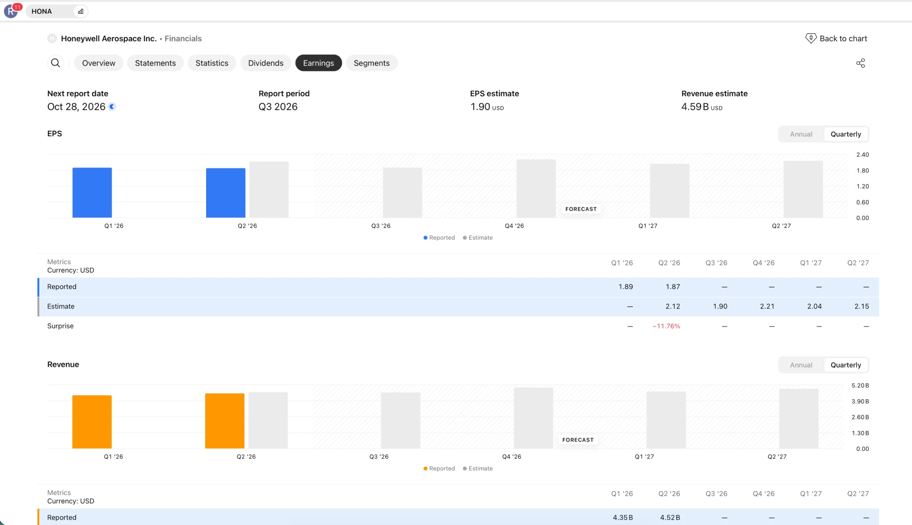

Luftfahrt
Antriebe, Avionik und Hilfsaggregate. Größter Bereich. Wettbewerber: RTX, Safran, GE Aerospace.
Eine Sondersituation: Ein Konzern teilt sich auf, und genau in dieser Phase verkaufen viele Fonds, ohne hinzuschauen. Warum ich das für eine Gelegenheit halte — und was dagegen spricht.
Große Fonds müssen Milliarden unterbringen und arbeiten nach festen Regeln. Eine Abspaltung haben sie sich nie ausgesucht: Sie passt oft weder in den Index noch ins Mandat und wird mechanisch verkauft — ohne dass jemand die neue Firma bewertet hätte. Nach der von Greenblatt zitierten Untersuchung schlagen Abspaltungen den Markt in den ersten drei Jahren um rund 10 % pro Jahr. Genau da bist du als Kleinanleger im Vorteil.
📚 Buchtipp: Joel Greenblatt, You Can Be a Stock Market Genius — mehr Empfehlungen in meiner Bio.

Luftfahrttechnik sowie Automatisierungs- und Gebäudetechnik — und genau diese Teile werden gerade voneinander getrennt.
Antriebe, Avionik und Hilfsaggregate. Größter Bereich. Wettbewerber: RTX, Safran, GE Aerospace.
Steuerungen, Sensoren, Sicherheitstechnik, Lagerautomatisierung. Wettbewerber: Emerson, Rockwell, Zebra.
Brandmelde- und Sicherheitsanlagen, Gebäudesoftware. Wettbewerber: Johnson Controls, Siemens, Schneider.
Die Stärke liegt nicht im Verkauf neuer Geräte, sondern im Ersatzteil- und Wartungsgeschäft. Über die jahrzehntelange Lebensdauer eines Flugzeugs wird geliefert, gewartet und überholt — etwa dreimal so viel Umsatz wie mit neuen Produkten, und deutlich margenstärker.
Angetrieben wird das von den weltweit geflogenen Flugstunden. Sichtbar im Rekord-Auftragsbestand von 39,1 Milliarden Dollar.
Der Konzern zerlegt sich in drei fokussierte Unternehmen. Die Materialsparte Solstice ist bereits abgespalten, die Trennung von Luftfahrt und Automatisierung läuft in der zweiten Jahreshälfte 2026.
Elliott Investment Management hat Druck gemacht, ein Partner sitzt im Verwaltungsrat. Elliott selbst ist laut Pflichtmeldungen nicht mehr investiert.
Auch die Quantensparte wird abgespalten. Sie hat zuletzt 600 Mio. $ eingesammelt, unter anderem von Nvidia, und wurde dabei mit 10 Mrd. $ bewertet — etwa doppelt so hoch wie 2024. Zum Vergleich: IonQ, die populärste Quantenaktie, liegt bei rund 18 Mrd. $.
Alte Lasten wurden abgearbeitet, etwa bei Asbest und der früheren Abspaltung von Resideo. Das vereinfacht die Geschichte und setzt künftige Zahlungsströme frei.

Der nächste Quartalsbericht. Erwartet werden 1,90 $ je Aktie bei 4,59 Mrd. $ Umsatz. Dann zeigt sich, ob die Margenschwäche wirklich vorübergehend war.
Mit einem 21-fachen Gewinn ist Honeywell historisch nicht billig, aber der Vergleich hinkt wegen der vielen Zu- und Abgänge. In den letzten fünf Jahren lag der Boden beim 18-fachen — nach unten ist der Spielraum damit klein, nach oben durch die Abspaltungen groß.
Aussagekräftiger ist die Summe der Einzelteile: jede künftige Firma für sich bewerten und addieren. Das ergibt bei mir im Basisszenario rund 50 % Luft nach oben, also Chance zu Risiko etwa 3 zu 1. Die Quantensparte kommt als Möglichkeit obendrauf.
Mehrere Sparten in kurzer Zeit abzuspalten ist nicht trivial. Das Projekt kann an der Umsetzung scheitern.
Der Umbau bindet Managementkapazität, die dem Tagesgeschäft fehlt — genau dann, wenn es liefern müsste.
Neuer Finanzchef, neue Leitung der Industrieautomatisierung. Ideal ist das nicht.
Die Prognose wurde gesenkt, weil die Lieferkette nicht nachkommt. Löst sich das nicht, bleibt die Marge unter Druck.
Weil die Aktie für eine Trendaussage noch zu jung ist, kaufe ich hier bewusst früh und in die Schwäche hinein, statt auf ein Signal zu warten. Das ist eine Entscheidung mit offenen Augen: Es kann noch tiefer gehen.
Anders als bei einem spekulativen Wert arbeite ich nicht mit einem engen Stop. Es ist ein etabliertes Unternehmen mit laufendem Geschäft und über 39 Milliarden Auftragsbestand — keine Wette, die über Nacht wertlos wird. Dafür gehört die Position entsprechend dimensioniert, und ein bis zwei Jahre Geduld muss man mitbringen.